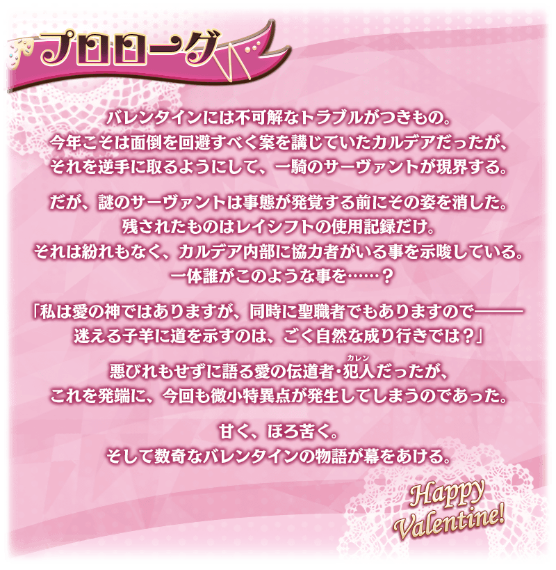
舉辦期間限定活動「瑪納諾紀念品情人節 ～巧克力之樹與女神的選擇～」！
在圍繞情人節的混論中，追著逃亡的從者好不容易來到歐洲的小鎮。
消滅從人們奪取活力的謎之魔物，在御主們現場調査露面的是…？
挑戰活動關卡收集「保鑣點數」，入手活動交換道具「鎖定巧克力」「驚喜巧克力」，收下來自從者的情人節禮物吧！
另外，本活動中，領取禮物時會展開從者特別的訊息(附語音)！
另外，本活動中與所有從者會有搭檔Rank，基於搭檔Rank會賦予活動限定的特效技能。
從者在戰鬥同行的話會提升搭檔度，此搭檔度超過一定值的話搭檔Rank會升級，也會強化特效技能。
與喜愛的從者一起戰鬥，讓活動有利地推進吧！
※可用「鎖定巧克力」「驚喜巧克力」交換情人節禮物來領取的從者，只限有召喚履歴的從者。 ※本活動中，在每次領取禮物時的文字冒險部份開始前都必須下載語音，會比以往增加資料流量。詳情請觀看此處的公告。
※本頁面皆為開發中圖片。會有與實際圖片相異的情況。 ※一部份的關卡j為後日開放。
◆活動舉辦期間◆
2022年2月9日(三) 17:00～2月23日(三) 11:59
◆活動參加條件◆
滿足以下條件的御主才能參加
・通過「特異點F 炎上汙染都市 冬木」
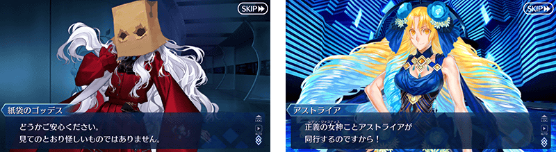
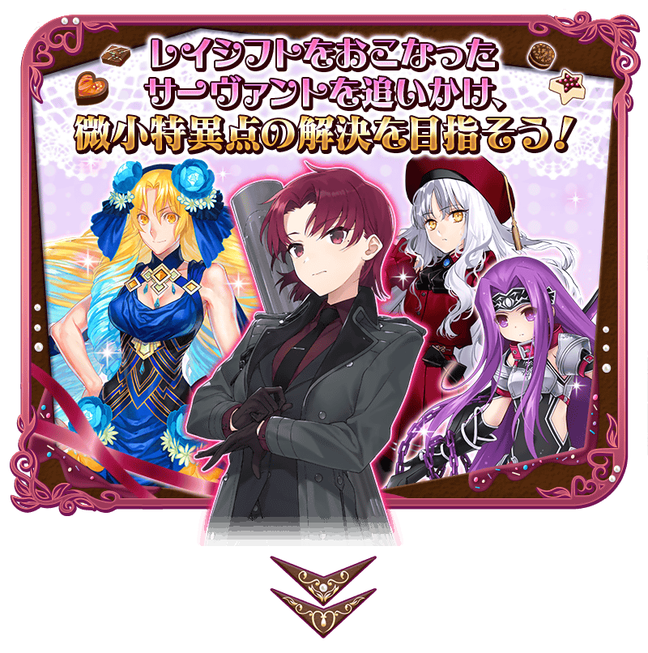 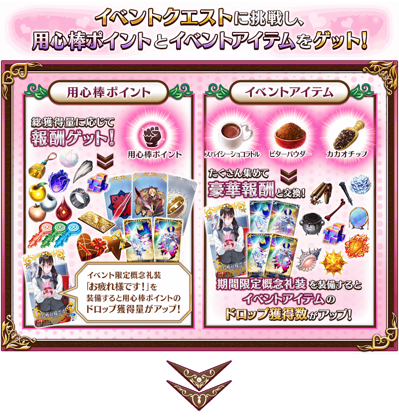 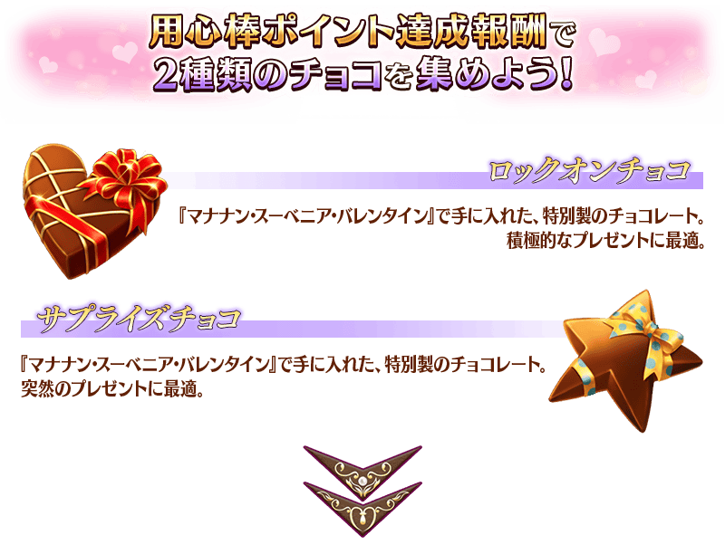 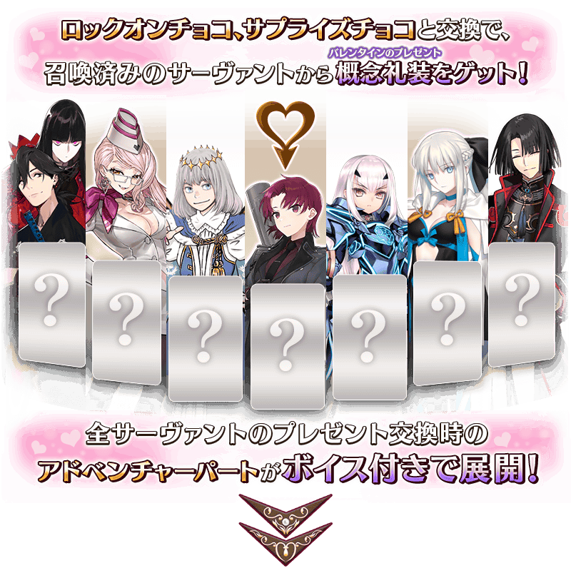 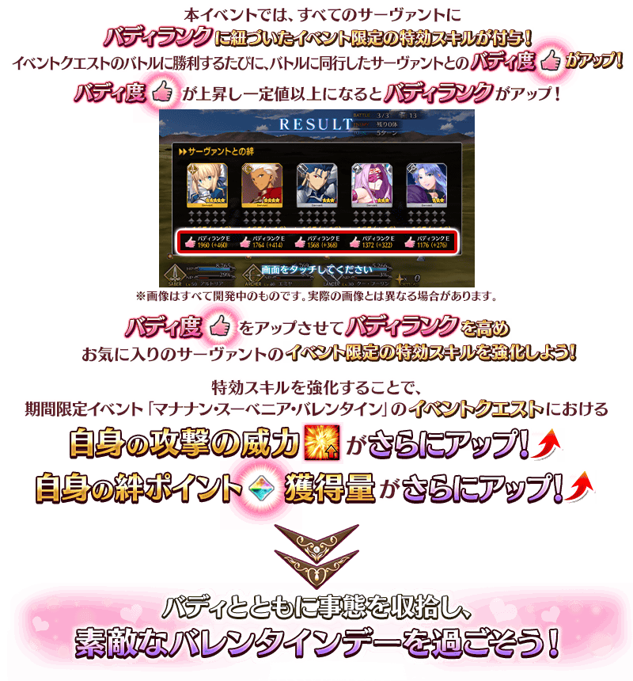
【2月9日(三) 17:00圖片更新】
◆關於從瑪修・基利艾拉特收到禮物事件的注意◆
※通過本活動序幕(プロローグ)的話，於「巧克力小姐的大驚小怪 -Valentine2016-」實裝從「瑪修・基利艾拉特」收下禮物時的事件，會以附語音登錄到個人空間(マイルーム)的「圖鑑(マテリアル)」內「瑪納諾紀念品情人節 ～巧克力之樹與女神的選擇～」。
※於達文西工房的「稀有稜鏡交換」獲得概念禮裝「カルデアスタンダード」也不會發生從瑪修・基利艾拉特收下禮物時的事件。

享受故事的主線關卡會逐日開放。
通過主線關卡第1節的話，會開放收集活動道具的自由關卡。
之後的自由關卡是藉由通過主線關卡來開放。
【關卡的舉辦期間】
| 關卡 | 舉辦期間 |
|---|---|
|
序幕(プロローグ) 主線關卡第1節 自由關卡 |
2022年2月9日(三) 17:00～ 2月23日(三) 11:59 |
|
主線關卡第2節 自由關卡 |
2022年2月10日(四) 17:00～ 2月23日(三) 11:59 |
|
主線關卡第3節 自由關卡 |
2022年2月11日(五) 17:00～ 2月23日(三) 11:59 |
|
主線關卡第4節 自由關卡 |
2022年2月12日(六) 17:00～ 2月23日(三) 11:59 |
|
主線關卡第5節 自由關卡 |
2022年2月13日(日) 17:00～ 2月23日(三) 11:59 |
|
主線關卡第6節 自由關卡 |
2022年2月14日(一) 17:00～ 2月23日(三) 11:59 |
|
主線關卡第7節 後記(エピローグ) 自由關卡 |
2022年2月15日(二) 17:00～ 2月23日(三) 11:59 |
做為保鑣點數達成報酬獲得的「鎖定巧克力」「驚喜巧克力」可在活動道具交換的「領取巧克力」「贈送巧克力」」交換成情人節的禮物(概念禮裝)。
※請注意可領取情人節禮物的從者，只限有召喚履歷的從者。沒有召喚履歷的者為對象外。 ※想從「★5(SSR)奧伯龍」領取情人節禮物必須通過第2部 第6章「Lostbelt No.6 妖精圓卓領域 阿瓦隆・勒菲 星辰誕生之刻」。 ※敬請注意未滿足從「★5(SSR)奧伯龍」領取情人節禮物條件的情況，贈送巧克力時的文字冒險部份不會登錄到圖鑑(マテリアル)。 ※就算持有於2021年以前的活動入手的禮物(概念禮裝)情況，還是可發生收下禮物的事件，即使是持有同樣的禮物也能持有不只一個。 ※一部份從者的特別訊息未對應全螢幕顯示。
◆交換期間◆
2022年2月9日(三) 17:00～3月2日(三) 11:59
※「鎖定巧克力」及「驚喜巧克力」在活動舉辦期間結束後才能交換QP。
※活動道具交換期間結束後「鎖定巧克力」「驚喜巧克力」會消失。
在活動道具交換選擇「領取巧克力」或「贈送巧克力」
在活動道具交換選擇「領取巧克力」主要是從女性從者收到情人節禮物，選擇「贈送巧克力」則是從男性從者。
關於一部份的從者，會是「領取巧克力」「贈送巧克力」雙方的對象，收到的禮物和事件內容各有差異。
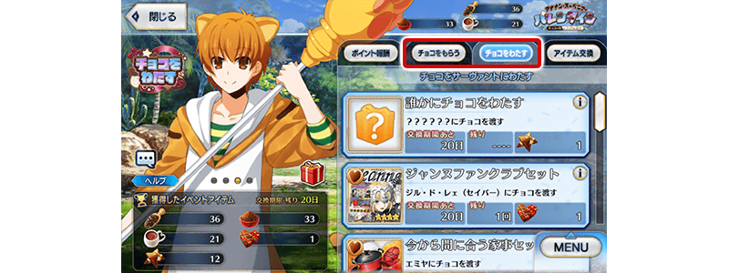
選擇與巧克力交換的禮物
從顯示的禮物之中任意選擇，選擇「從誰領取巧克力(贈送巧克力給誰)」吧！
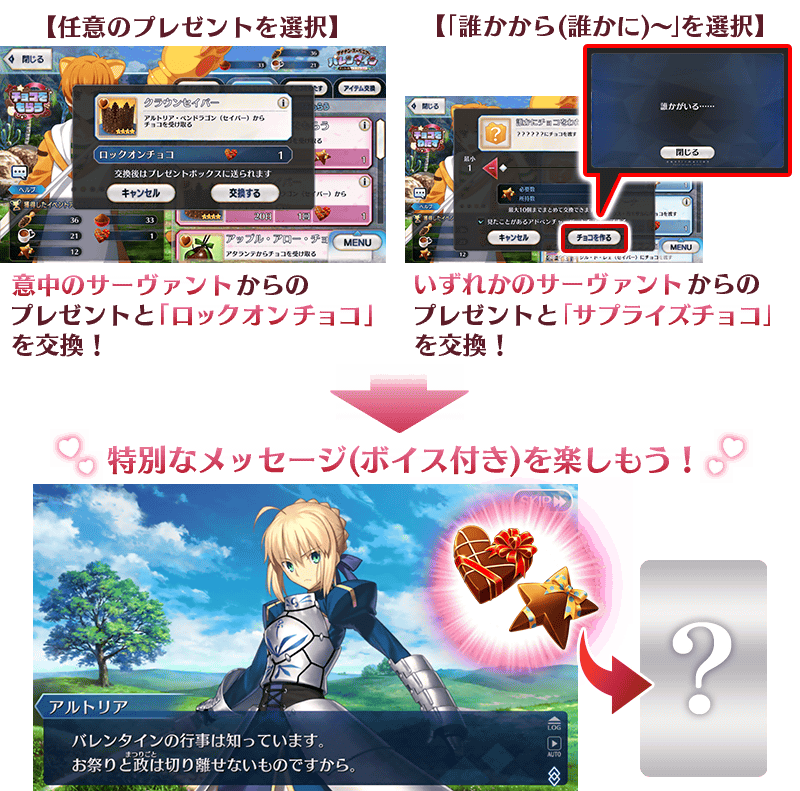
※「鎖定巧克力」與「驚喜巧克力」在交換禮物時的活動內容及可入手的概念禮裝沒有差異。
活動道具交換「領取巧克力」「贈送巧克力」修改成1次最多可交換至10個
在過去的情人節活動，有看過交換巧克力時文字冒險部份的情況，變得會在活動道具的交換一覧顯示「已獲得」的圖示。
另外，只限選擇用驚喜巧克力「從誰領取巧克力」「贈送巧克力給誰」的情況，變得不會播放過去看過的文字冒險部份，只會連續撥放沒看過的文字冒險部份。
※是否跳過有看過的文字冒險部份，能在畫面內的勾選欄選擇。
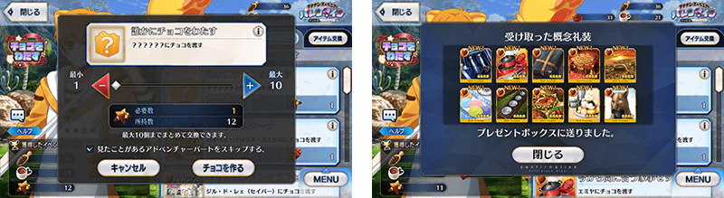
本活動中與所有從者會有搭檔Rank，基於搭檔Rank會賦予活動限定的特效技能。
從者在戰鬥同行的話會提升搭檔度，此搭檔度超過一定值的話搭檔Rank會升級，也會強化特效技能。
還有，搭檔度會根據隊伍編成時的編成位置變動上升量，越靠近左方1st的話在戰鬥勝利時會提升越多的搭檔度。
與成為搭檔的喜愛從者一起參加戰鬥，讓活動有利地推進吧！
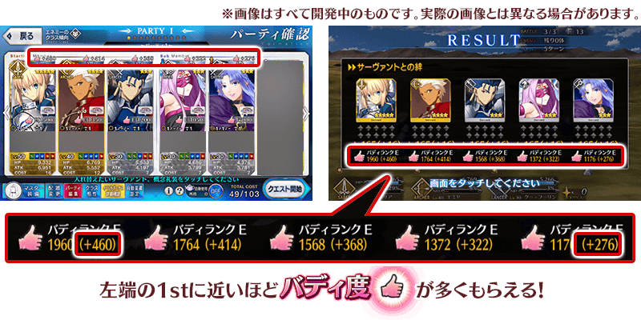
【2月9日(三) 17:00圖片更新】
※強化的特效技能只會基於搭檔Rank，關於賦予一部份的從者的活動加成不會強化。
關於活動加成請確認此處。
※支援從者會對應持有該從者的御主所獲得的搭檔Rank發揮特效技能。
※從關卡出撃前的隊伍確認畫面移動到從者選擇畫面時，在設定排序內的對話框追加依搭檔度順序顯示從者。
搭檔Rank需要的搭檔度與特效技能的數值
【2月9日(三) 17:00追記】
| 搭檔度 | 搭檔Rank | 自身的 攻擊威力 |
自身的 絆點數獲得量 |
|---|---|---|---|
| 150,000～ | EX++ | ＋100％ | ＋100% |
| 90,000～ | EX+ | ＋100％ | ＋100% |
| 50,000～ | EX | ＋100％ | ＋100% |
| 30,000～ | A | ＋80％ | ＋80％ |
| 15,000～ | B | ＋60％ | ＋60％ |
| 8,000～ | C | ＋40％ | ＋40％ |
| 3,000～ | D | ＋20％ | ＋20％ |
| 0～ | E | ＋10％ | ＋10％ |
※只有瑪修・基利艾拉特的「絆點數獲得量提升」效果變成「包含候補的我方全體絆點數獲得量提升」效果。此效果在支援時無效。 ※EX+、EX++只是稱號的變化，效果量與EX相同。
開放在可做為關卡報酬獲得出撃關卡時使用後，絆點數獲得量變成2倍的「占星茶壺」的關卡。
活用「占星茶壺」，在本活動與喜愛從者的羈絆更深吧！
※請注意只限於可獲得絆點數的關卡中獲得量變成2倍。
◆道具使用期限◆
2022年2月9日(三) 17:00～2月28日(一) 11:59
※「占星茶壺」有使用期限，超過使用期限「占星茶壺」會消失，敬請注意。
保鑣點數的的總獲得量到達一定量的話，可獲得達成報酬。
除了「鎖定巧克力」「驚喜巧克力」以外，還能獲得活動限定指令紋章等。
達成報酬可在點擊管理室(ターミナル)畫面右上的「活動報酬」鍵所顯示的「保鑣點數報酬」畫面確認。
※保鑣點數的的總獲得量是計算在活動關卡掉落所獲得的保鑣點數。
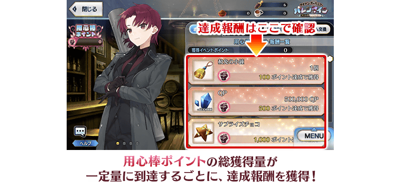
【2月16日(三) 17:00追記】
以通過期間限定活動「瑪納諾紀念品情人節 ～巧克力之樹與女神的選擇～」的後記(エピローグ)及「終局特異點」的御主為對象，開放高難易度的「挑戰關卡」。
「挑戰關卡」就算通過後也不會消失，可以變更從者和概念禮裝的組合等後無限次挑戰。
※關卡通過報酬、戰利品、御主EXP、魔術禮裝EXP、絆點數只可在初次通過時獲得。
◆挑戰關卡開放時間◆
2022年2月16日(三) 17:00～
◆挑戰關卡參加條件◆
滿足以下條件的御主才能參加
・通過期間限定活動「瑪納諾紀念品情人節 ～巧克力之樹與女神的選擇～」的後記(エピローグ)
・通過「終局特異點」
◆挑戰關卡初次通過報酬◆
傳承結晶 1個
超值攻略方法・其1
本活動的期間中，所有的從者會基於搭檔Rank賦予活動限定的特效技能。
並且，下表的從者在活動關卡中，會得到「自身的攻擊威力提升」與「絆點數獲得量提升」的加成！
強化對象從者，向活動挑戰吧！
※活動加成的效果量因從者而異。 ※透過搭檔Rank的特效技能效果與在賦予表內從者的活動加成效果是以加算發揮。
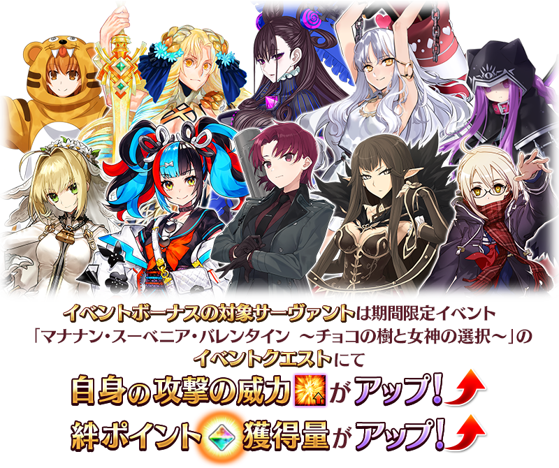
【活動加成的效果量與對象從者】
| 自身的 攻擊威力 |
絆點數 獲得量 |
職階 | 稀有度 | 從者名 |
|---|---|---|---|---|
| ＋100% | 只限自身 ＋50% |
Alterego | ★★★★★ | 瑪納諾・麥克・列〔巴婕特〕 |
| ＋50％ | 只限自身 ＋20% |
Lancer | ★★★★ | 美杜莎 |
| ★★★ | 豹人 | |||
| Ruler | ★★★★★ | 卡蓮・Ｃ・奧爾黛西亞(埃莫〔卡蓮〕) | ||
| ★★★★ | 阿斯特蕾亞 | |||
| ＋30％ | 只限自身 ＋20% |
Saber | ★★★★★ | 尼祿・克勞狄烏斯〔Bride〕 |
| Archer | ★★★★★ | 清少納言 | ||
| Caster | ★★★★★ | 紫式部 | ||
| Assassin | ★★★★★ | 賽米拉米斯 | ||
| Berserker | ★★★★★ | 謎之女主角X〔Alter〕 |
※就算成為對象從者也會有未在本活動的主線劇本登場的情況。 ※埃莫〔卡蓮〕進行靈基再臨的話，卡面名稱會變成卡蓮・C・奧爾黛西亞。 ※自2月2日(三) 17:00，在從者選擇畫面和從者強化畫面等，追加活動加成篩選器。由於是只顯示於活動活躍從者的便利功能，敬請活用。
超值攻略方法・其2
裝備活動限定概念禮裝讓保鑣點數的掉落獲得量提升！
裝備可靠活動道具交換與保鑣點數達成報酬入手的活動限定概念禮裝「★5(SSR)お疲れ様です！」的話，保鑣點數的掉落獲得量會提升。
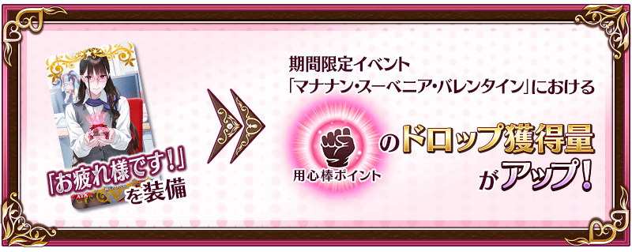
另外，裝備自從者收下「情人節禮物」概念禮裝的話，保鑣點數的掉落獲得量也會提升！
【情人節的禮物】
超值攻略方法・其3
裝備期間限定概念禮裝讓活動道具的掉落獲得數提升！
裝備在聖晶石召喚Pick Up的期間限定概念禮裝「★5(SSR)バレンタイン・ウィッチーズ」「★4(SR)メルティ・ラブ」「★3(R)ホット・ショコラトル」的話，活動道具「香料可可飲」「苦澀粉末」「可可亞碎屑」各自的掉落獲得數會提升。
※請注意各關卡的道具掉落率並非100％。
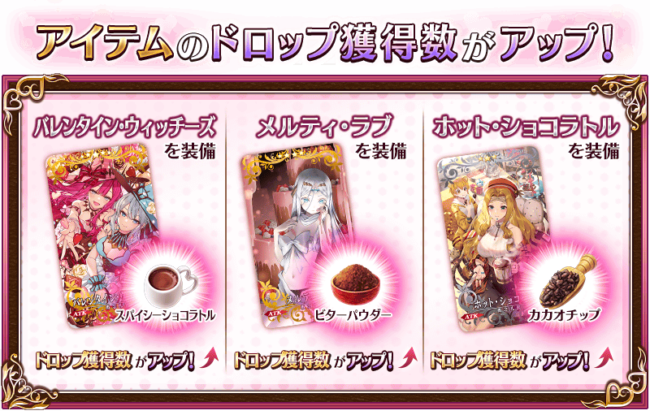
【2月9日(三) 17:00追記】
| 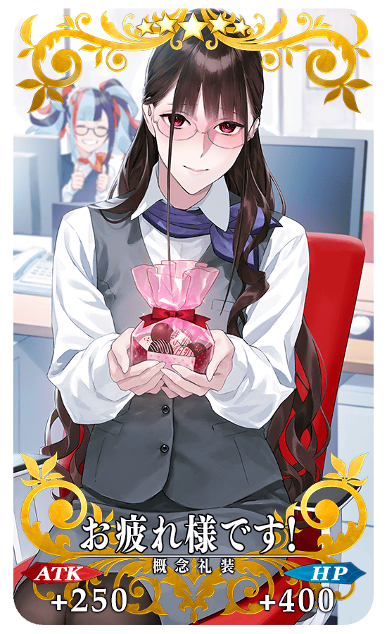 |
★★★★★SSR
|
【2月9日(三) 17:00追記】
|
【活動限定】 |
| 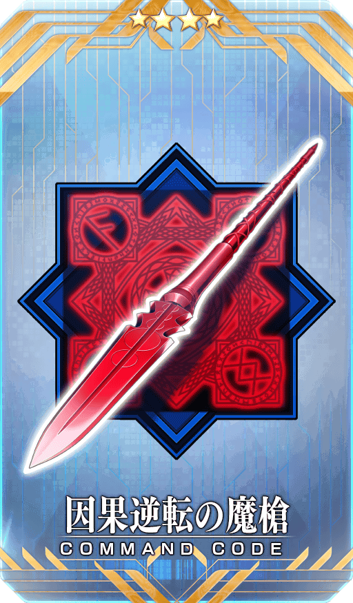 |
★★★★SR |
| 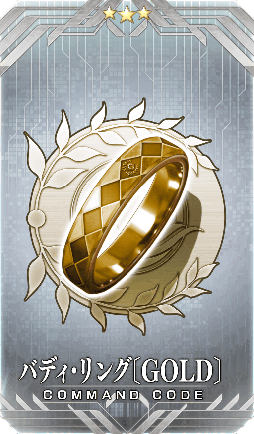 |
★★★R |
活動道具可自點擊管理室(ターミナル)畫面右上「活動報酬」鍵所顯示的「活動道具交換」畫面，交換以下的道具。
※關於傳承結晶、英靈結晶・流星之芙芙ALL★4(HP)、英靈結晶・日輪之芙芙ALL★4(ATK)，在通過本活動的主線關卡後才能交換。 ※「鎖定巧克力」「驚喜巧克力」在活動期間結束後可交換成QP。 ※活動道具交換期間結束後「香料可可飲」「苦澀粉末」「可可亞碎屑」「鎖定巧克力」「驚喜巧克力」會消失。
◆交換期間◆
2022年2月9日(三) 17:00～3月2日(三) 11:59
◆能用香料可可飲交換的道具◆
|
【活動限定概念禮裝】 【技能強化＆靈基再臨素材】 【靈基再臨素材】 【其他道具】 |
◆能用苦澀粉末交換的道具◆
|
【活動限定概念禮裝】 【技能強化＆靈基再臨素材】 【靈基再臨素材】 【其他道具】 |
◆能用可可亞碎屑交換的道具◆
| 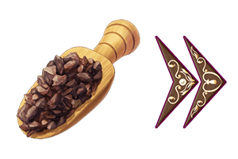 |
【活動限定概念禮裝】 【技能強化＆靈基再臨素材】 【其他道具】 |
◆能用「鎖定巧克力」、「驚喜巧克力」交換的道具◆
|
【其他道具】 |

【2月9日(三) 17:00追記】
強化「★5(SSR)卡蓮・Ｃ・奧爾黛西亞(埃莫〔卡蓮〕)」的特別關卡「從者強化關卡」，在迦勒底之門永久追加。
不僅進行對象從者的強化，也可獲得聖晶石做為關卡通過報酬。
※從者強化關卡請注意在沒有文字冒險部份。
◆追加時間◆
2022年2月9日(三) 17:00～
◆開放條件◆
持有的強化對象從者，必須使其最終再臨。
※未持有對象從者的話，不會出現關卡。
※關卡沒有舉辦期限。

【2月9日(三) 17:00追記】
其他還有，
・情人節2022Pick Up召喚
・「情人節2022」舉辦前夕宣傳活動
以期間限定舉辦中！
關於詳情，請自下述橫幅確認。
■「情人節2022Pick Up召喚」詳細情報

■「情人節2022」舉辦前夕宣傳活動詳細情報